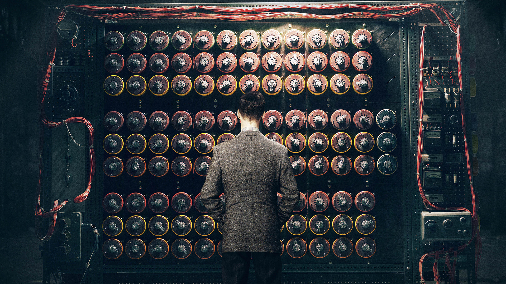

Alan Turing
The mathematician who broke the German Enigma machine codes.

We can only see a short distance ahead, but we can see plenty there that needs to be done.
The machine that helped cryptographers decipher Enigma. - Known as the Bombe
- 1912 - Alan Mathison Turing born in Maida Vale, London, to Ethel Sara Turing (nee Stoney) and Julius Mathison Turing.
- 1927 - Alan furthers his love of science and maths by reading Einstein whilst at Sherborne. His great friend, Christopher Morcom, who shares his interests, suddenly dies. Alan is devastated.
- 1934 - Alan graduates with distinction in Mathematics from King's College, Cambridge.
- 1938 - Alan goes to Princeton University in America to study mathematics and is awarded a PhD.
- 1939 - September - Alan is asked to join the Government Codes and Ciphers School and arrives at Bletchley Park the day after war is declared.
- 1940 - With Gordon Welchman, Alan develops the Bombe to decipher the messages sent by the Germans using their Enigma machine.
- 1945 - At the end of the war, Alan Turing is awarded the OBE for his wartime services.
- 1946 - Alan publishes a paper with the first detailed design of a stored-program computer.
- 1952 - Alan is arrested for gross indecency. He loses his security clearance so he cannot work. He is offered chemical treatment instead of going to prison. The treatment makes him very unwell.
- 1954 - Alan dies in his home in Wilmslow, Cheshire, from poisoning. A half-eaten apple was found next to him laced with cyanide.
- 2007 - A slate sculpture of Alan Turing is unveiled at Bletchley Park.
- 2013 - Alan Turing was pardoned by the Queen.
More About Alan Turing's Life and his accomplishments on this timeline